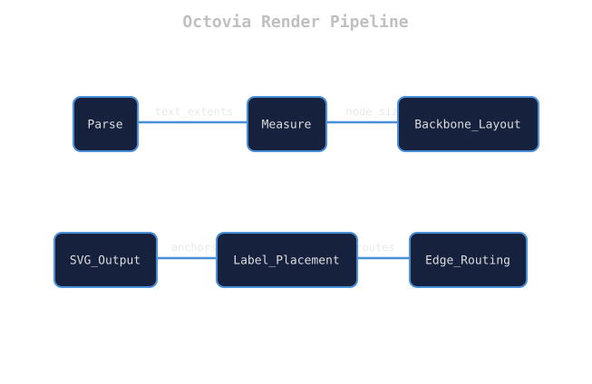
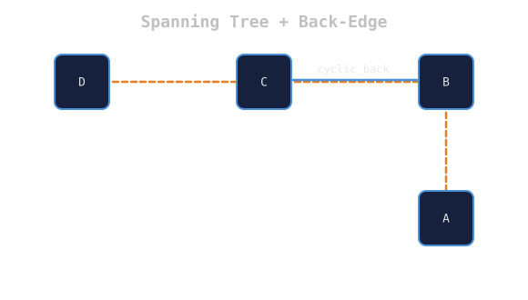
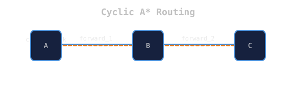
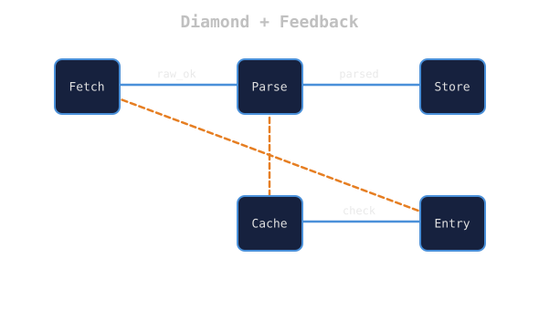

A bespoke, DOM-free state diagram rendering engine in pure Rust • 6 phases • 8 ports • 80 tests
Easy to read, easy to write — every graph is beautiful because every node connects through exactly 8 ports. No arbitrary angles, no overlapping chaos, no bezier spaghetti. Output is pure SVG in the London Underground transit-map style.

The engine processes a DSL description through 6 phases, each transforming the AST toward the final SVG. The pipeline is linear — each phase depends only on the output of the previous one.
| Phase | Module | Input | Output | Dependency |
|---|---|---|---|---|
| 1 | parser | DSL / JSON text | Diagram {nodes, edges} | nom |
| 2 | measure | Labels (string) | {text_extents, node_size} | cosmic-text |
| 3 | layout | Nodes + edges | {position, is_cyclic} | — |
| 4 | routing | Positions + topology | edge.route: Vec<Point> | pathfinding |
| 5 | svg_output | Full resolved diagram | SVG string | — |
Two input formats: a text DSL (parsed line-by-line with string splitting, not nom combinators) and JSON (deserialised with serde). Both produce the same AST types.
A global FontSystem (initialised once via OnceLock<Mutex<>>)
loads JetBrains Mono at 14px. Each label is measured and text wraps at MAX_NODE_WIDTH = 180px.
BFS from the root node (preferring one with zero incoming edges). Forward edges form the
happy path. Edges where spanning_index(to) ≤ spanning_index(from)
are tagged is_cyclic = true.


The spanning tree is laid out in a serpentine (ox-ploughing) pattern. Even rows fill left→right, odd rows right→left, wrapping at a row width computed from the viewport.
| Constant | Value | Purpose |
|---|---|---|
| GRID_SPACING_X | 200 | Horizontal centre-to-centre |
| GRID_SPACING_Y | 150 | Vertical row-to-row |
| NODE_RADIUS | 30 | Fallback half-size |
| MIN_VIEWPORT | 400 | Minimum viewport edge |
Pass 1 — Forward edges (deterministic, O(n)):
Every forward edge exits the source's East port and enters the target's West port along a straight horizontal line at the source's Y-coordinate. Zero turns. Zero crossings.
Pass 2 — Cyclic edges (A* with transit-map cost):
A 10px-resolution grid tracks which cells are occupied by nodes (3-cell-radius square)
and previously-routed edges. A* only traverses is_free cells — no overlapping
elements.
Node labels are centred inside the node rectangle.
Edge labels sit at the route midpoint, offset 12px above,
with opacity="0.7" for visual hierarchy.
The AnchorSlot enum defines all 8 positions around each node:
TopBottomLeftRight
TopLeftTopRightBottomLeftBottomRight
A future collision-resolution pass could score each slot by edge-path intersection count
and pick the best one.
compute_bounds() scans every node position and edge route point,
adds 40px padding, and sets viewBox dynamically. The SVG fits its
content exactly — no wasted space, no clipping.
| Property | Transit | Ember | Forest | Light | Mono |
|---|---|---|---|---|---|
| Background | #1A1A2E | #1C1410 | #0F1A14 | #F5F5F0 | #111112 |
| Node fill | #16213E | #2A1D16 | #16251D | #FFFFFF | #1C1C1E |
| Node stroke | #4A90D9 | #D4803A | #3D9B6B | #4A6FA5 | #888899 |
| Forward edge | #4A90D9 | #D4803A | #3D9B6B | #4A6FA5 | #888899 |
| Cyclic edge | #E67E22 | #E8A838 | #7CC49E | #C06030 | #BBBBC8 |
| Label | #E0E0E0 | #E8D5C0 | #CDE0D5 | #2C2C2E | #D0D0D6 |
Cyclic edges always render with stroke-dasharray="6,4" (dashed).

✅ Planarity — bounded edge density
✅ Ordering — forward uses E/W, cyclic uses N/S
✅ Octilinearity — only 0°/45°/90°/135° angles
✅ Separability — A* always finds clean paths for cycles
✅ Readability — forward edges never turn
Each module is independently testable — 80 total tests covering every phase.
Try these in the Octovia Playground: